The rapid expansion of the global energy storage market has necessitated an industrial shift from pilot-scale production to high-throughput, extreme manufacturing environments. As utility-scale Battery Energy Storage Systems (BESS) evolve toward gigawatt-hour (GWh) capacities, the complexity of their assembly introduces a proliferation of potential failure modes that span from the electrochemical interface of individual cells to the high-voltage power conversion interfaces of containerized solutions.
Manufacturing defects in BESS assembly often stem from system integration rather than cell production alone. These issues can lead to safety risks like thermal runaway or fires if not addressed. Prevention relies on rigorous quality controls, testing, and standardized procedures tailored to BESS complexity.
System-Level Integration: The 2024 Defect Pivot
System integration accounts for about 72% of BESS defects, with 64% tied to component failures and improper balance-of-system (BOS) assembly, such as coolant leaks or faulty sensors. Enclosure issues make up 30%, including grounding defects or structural damage from handling. Another 6% involve performance test failures from wiring errors during charging/discharging.
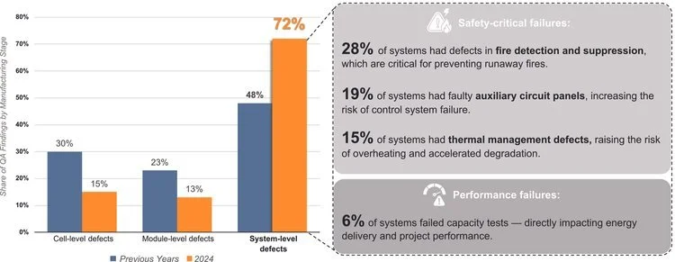
- Implement thorough Factory Acceptance Tests (FAT) to catch high internal resistance from poor busbar welds or unbalanced wiring.
- Use automated error-proofing for coolant systems and active monitoring of pyro disconnect circuits.
- Standardize BOS component compatibility checks to avoid integration of mismatched HVAC, wiring, or fire suppression parts.
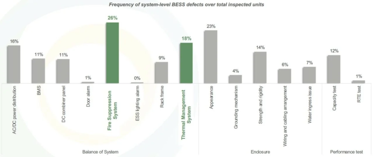
Auxiliary Circuit Panels and Control Reliability
Faulty auxiliary circuit panels were identified in 19% of inspected systems. These panels provide critical power to the BMS, the cooling fans, and the safety sensors. Manufacturing errors in these panels, such as loose terminal torque or the use of undersized wiring, can lead to control system failure. A failure of the auxiliary power during a grid event could prevent the BESS from performing its protective functions, leading to catastrophic system loss.
Module and Rack Assembly: The Challenges of Interconnectivity
As individual cells are grouped into modules, the primary defect modes transition from chemical to mechanical and electrical. The integration of high-capacity BESS modules requires thousands of electrical connections, each of which represents a potential point of failure.
At the module stage, 48% of issues arise from cell sorting and installation, like inconsistent glue or misaligned cells. Welding problems contribute 32%, such as incorrect spot positions. Electrical testing and enclosing add 11-20%, with voltage abnormalities or poor cell placement.

Weld defects are often caused by:
- Inconsistent laser power or focus during the automated welding process.
- Surface contamination (oils, dust) on the tabs or busbars.
- Poor mechanical fit-up between the tab and the busbar, leading to air gaps that prevent effective fusion
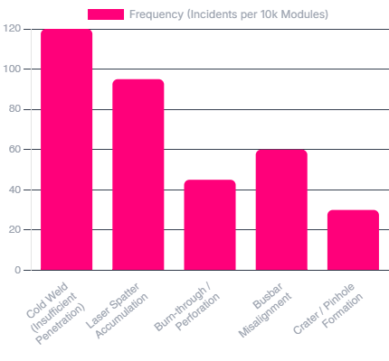
Insulation and Dielectric Failures
As modules are stacked into high-voltage racks, insulation becomes paramount. Manufacturing errors in the application of insulation layers or the routing of electrical harnesses can lead to dielectric failure. For instance, if a wiring harness is routed over a sharp edge of the module casing without proper protection, the vibration during transportation or the thermal expansion during use can cause the edge to saw through the insulation. This creates a ground fault that, if not detected by the BMS, can result in high-energy arcing events.
Cell-Level Manufacturing Defects: The Electrochemical Foundation
While system-level issues are rising in frequency, the lithium-ion cell remains the most delicate and unforgiving component in the BESS assembly. Defect modes at this level are often invisible and can manifest as latent failures that activate only after months of field operation.
Cell manufacturing defects represent 15% overall, with 40% from electrode coating issues like missing quality checks. These latent flaws can trigger internal shorts or overheating later.
- Enforce strict electrode inspection protocols during production.
- Conduct incoming quality checks on cells before module assembly.
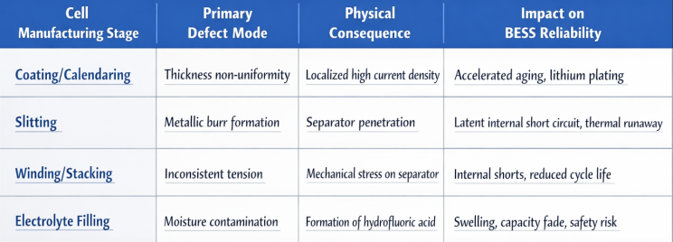
Thermal Management Manufacturing Defects: Coolant Integrity
Leaks in coolant hoses, overtightened joints, or faulty compressor boards affect 15-18% of systems, accelerating degradation. Ventilation failures from improper installation compound this.
The risk of leakage is multifaceted:
- Thermal Failure: Loss of coolant reduces the systems ability to remove heat, leading to inhomogeneous aging and potential thermal runaway.
- Short Circuit Risk: Many coolants are conductive or contain additives that can become conductive. If coolant leaks onto high-voltage busbars or electronic components, it can initiate a catastrophic short circuit.
- Corrosion: Leaked coolant can accelerate the corrosion of the BESS enclosure and internal rack structures, compromising long-term structural integrity.
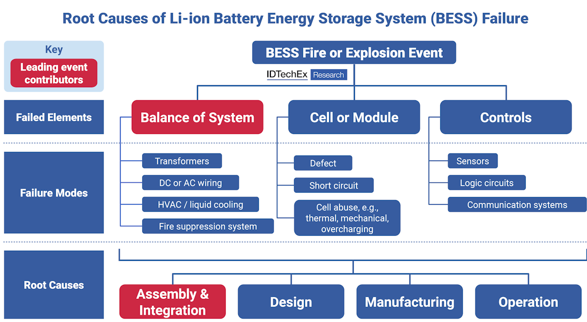
Control System and Communication Defects: The Digital Vulnerabilities
The complexity of BESS control architecture—integrating the BMS, Power Conversion System (PCS), and EMS—introduces numerous opportunities for manufacturing and configuration errors.
SOC Estimation and LFP Calibration Errors
The industry's shift toward LFP chemistry has introduced specific challenges for BMS manufacturing. LFP batteries have an extremely flat Open Circuit Voltage (OCV) curve, making State of Charge (SOC) estimation highly sensitive to measurement errors. A manufacturing defect in the voltage sensing circuit, such as a high-impedance connection or uncalibrated analog-to-digital converters, can lead to SOC estimation errors exceeding 15%.

These errors lead to:
- Inefficient Energy Utilization: Racks may be disconnected prematurely or allowed to reach unsafe depths of discharge.
- Imbalance Issues: Racks connected to the same PCS may develop differing SOC levels, causing some racks to bear more load than others, accelerating their degradation.
- Unnecessary Balancing: The BMS may attempt to balance cells based on incorrect data, which can actually harm performance and reduce the battery's lifetime.
Electromagnetic Compatibility (EMC) and Signal Integrity
Modern BESS architectures use fast-switching semiconductors like Silicon Carbide (SiC) that operate at frequencies of 100 kHz or higher. These devices generate significant electromagnetic interference (EMI). A common manufacturing defect in BESS assembly is the improper design or installation of EMC shielding and grounding.
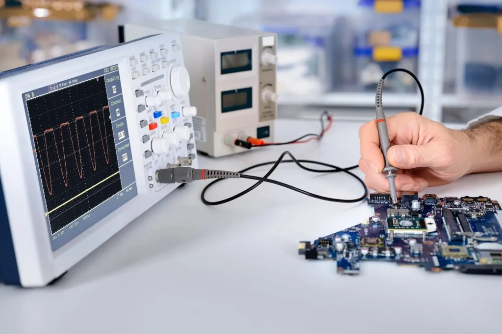
Failure to follow strict cable separation and grounding protocols can lead to:
- Corrupted Data: High-power transients coupling into low-voltage communication buses, causing false alarms or loss of system control.
- BMS Malfunctions: Noise-induced errors in the BMS measurements, leading to incorrect SOC estimates and potential safety incidents.
- Grid Stability Issues: Harmonics injected onto the power lines due to poor filter integration in the PCS.
Technological Frameworks for Defect Prevention
To mitigate these multifaceted risks, manufacturers are deploying advanced technological frameworks that integrate automation, real-time sensing, and AI-driven analytics into the assembly line.
Automated Cell Sorting and Surface Preparation
To prevent cell-level defects from entering the assembly, automated sorting systems classify cells based on Open Circuit Voltage (OCV) and AC Internal Resistance (ACIR). This ensures that only cells with uniform performance are grouped into modules, minimizing the likelihood of future imbalances. Furthermore, plasma cleaning is used to remove microscopic contaminants from cell surfaces before welding, ensuring a high-quality, low-resistance connection.
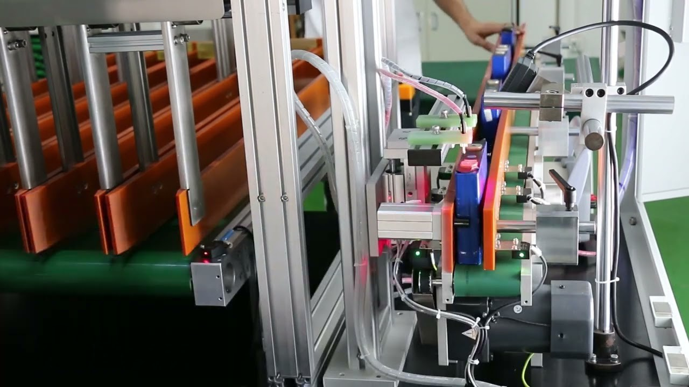
Machine Vision and 3D Laser Profiling
Machine vision has revolutionized the inspection of welding processes in BESS assembly. High-resolution 2D cameras are used to detect surface defects and fracture welds, while 3D laser profilers provide depth information to measure the height and volume of the weld seam.
These systems can achieve:
- 0% Defect Leakage Rate: Identifying every defective weld before a module moves to the next stage of assembly.
- Micron-Level Accuracy: Detecting misalignment between the electrode tab and the pole with a precision of 0.02mm.
- Real-Time Feedback: Allowing the laser welder to adjust its parameters based on the measured gap between components, ensuring consistent weld quality.
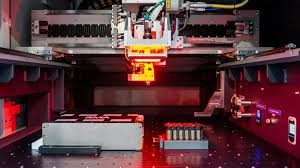
Leading Manufacturer Strategies: Vertical Integration and Safety-by-Design
Two distinct strategic models have emerged among the industry’s major players: the vertically integrated model exemplified by Tesla and the extreme manufacturing model led by CATL.
Tesla Megapack: Vertical Integration and Factory Pre-Testing
Tesla approach to BESS manufacturing emphasizes vertical integration across design, manufacturing, and software controls. By engineering the cell, module, inverter, and thermal system as a single integrated ecosystem, Tesla minimizes the integration risks that plague multi-vendor systems.
The Megapack strategy focuses on:
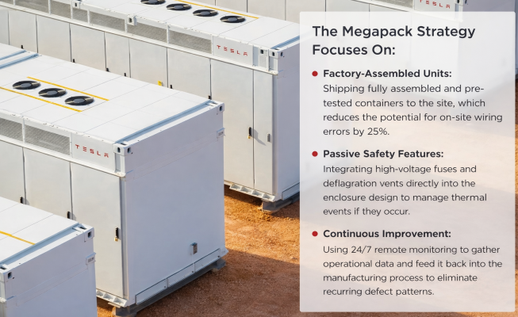
- Factory-Assembled Units: Shipping fully assembled and pre-tested containers to the site, which reduces the potential for on-site wiring errors by 25%.
- Passive Safety Features: Integrating high-voltage fuses and deflagration vents directly into the enclosure design to manage thermal events if they occur.
- Continuous Improvement: Using 24/7 remote monitoring to gather operational data and feed it back into the manufacturing process to eliminate recurring defect patterns.
CATL: Extreme Manufacturing and Zero-Defect Targets
Contemporary Amperex Technology Co., Limited has pushed the boundaries of BESS production through what it calls extreme manufacturing. Their production lines can produce a cell in 1.7 seconds and a module in 20 seconds, while maintaining a single-cell defect rate of one in a billion.
Their defect prevention strategy includes:
- Intelligent Thermal Management: A liquid cooling system that ensures a temperature difference of less than 5 degree Celsius across all cells in a container, minimizing the "weakest link" effect.
- Multi-Level Protection: Applying anti-flammable materials and active gas isolation (NP 2.0) at the cell and rack levels to prevent defect-induced thermal runaway from propagating.
- Smart Management Technology: Using AI algorithms to predict cell health and identify "abnormal cells" in advance of failure based on full-lifecycle data monitoring.
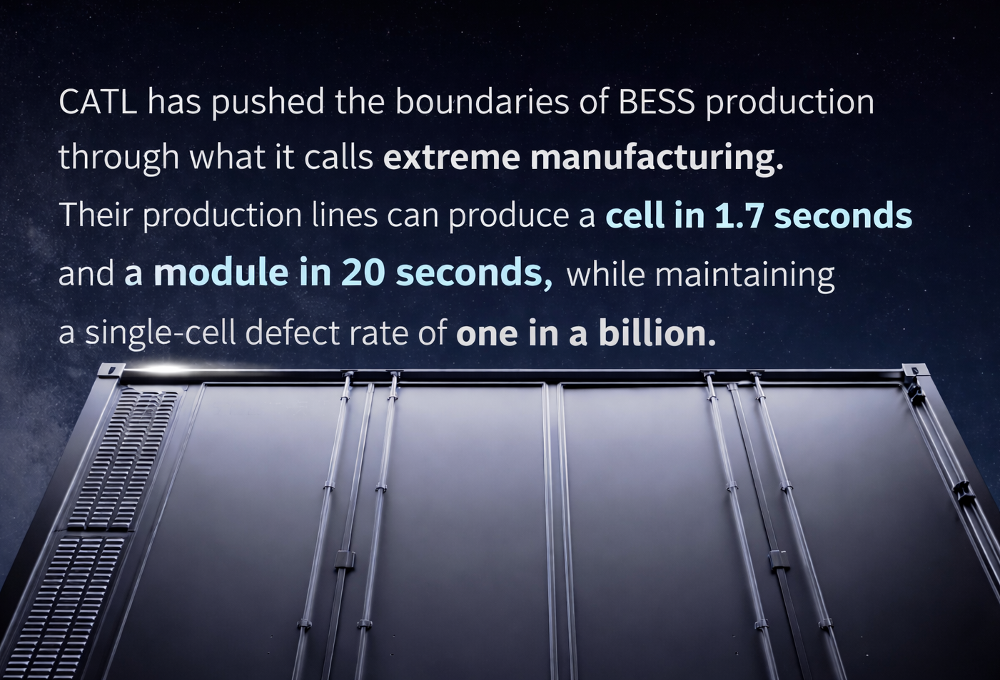
Quality Assurance Protocols: The Role of Commissioning
Commissioning serves as the final quality gate in the BESS manufacturing lifecycle, catching defects that may have been missed during factory testing or introduced during transportation.
Torque Verification and Thermal Imaging
During the assembly of racks on-site, one of the most common errors is improper torque application on terminal connections. A loose connection creates a point of high resistance that can lead to electrical arcing. Commissioning protocols require that every bolt and termination be checked with a calibrated torque wrench. To verify the integrity of these connections under load, infrared (thermal) cameras are used to scan for hot spots while the system is operating at high power.
Insulation and Grounding Continuity Tests
Before a BESS is energized, its electrical path must be validated through insulation resistance (megger) testing and grounding continuity checks. These tests are designed to detect manufacturing defects such as:
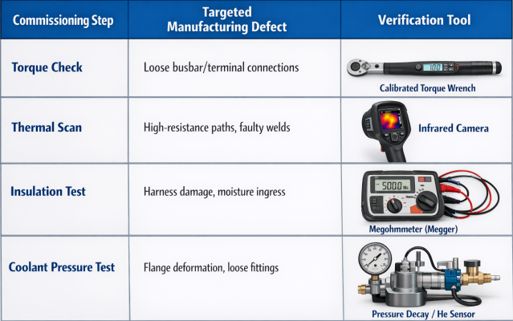
Broader Prevention Framework
Adopt less manual processes with automated tools to reduce human error in labor-intensive integration. Comprehensive commissioning plans minimize handling damage. For India-specific BESS manufacturing, align with domestic content rules by prioritizing verified suppliers and state-level policy incentives for quality upgrades.
Know More About Semco Infratech's BESS Assembly Solutions
Explore how Semco Infratech's automatic BESS assembly lines can transform your battery manufacturing operations. The company offers comprehensive solutions tailored to your production scale—from startup R&D operations to full commercial manufacturing volumes. Semco's integrated approach combines state-of-the-art equipment, intelligent process management, and expert technical support to establish efficient, scalable battery production capabilities.
Contact Semco Infratech to discuss your BESS manufacturing requirements and discover how automatic assembly solutions can enhance your production efficiency, ensure product quality, and accelerate your path to market competitiveness.
For demos, solutions, or collaborations:
Connect at sales@semcoindia.com | +91-8920681227 | www.semcoinfratech.com